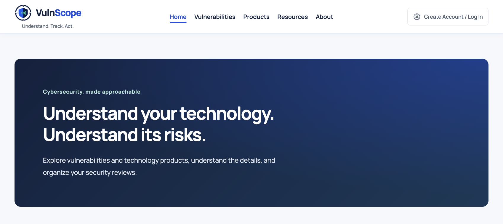

Foundation
Understand the Problem
- Requirements
- Systems Thinking
- Data Flows
- Usability
- Risk Awareness
Projects
These projects turn software development and cybersecurity concepts into practical applications. Each build provides a space to experiment, solve problems, and document decisions across interfaces, APIs, data, and automation.

Development Approach
Useful software starts with understanding the problem. Clear interfaces, thoughtful data handling, and iterative testing help turn concepts into applications that are easier to use, maintain, and improve.
Foundation
Implementation
Quality
Testing helps confirm expected behavior and uncover edge cases. Documentation records key decisions, limitations, and next steps so projects can be reviewed and extended.

A full-stack cybersecurity application for exploring NIST NVD vulnerability and product data, with guest workspaces for managing local security reviews.
The Vulnerability Awareness & Triage workspace supports CVE search, severity filters, pagination, record details, and guest-owned CRUD. Developed as part of a two-person project.

A responsive web application that dynamically loads and displays Airbnb listing data from a JSON dataset.
The project uses asynchronous JavaScript to fetch listing data, generate cards dynamically, provide search functionality, and handle unavailable images gracefully.

A CS 5610 project demonstrating foundational web-development concepts through semantic HTML and CSS.
The project covers semantic page structure, internal navigation, SEO metadata, the CSS box model, font sizing, positioning, Git version control, and deployment.